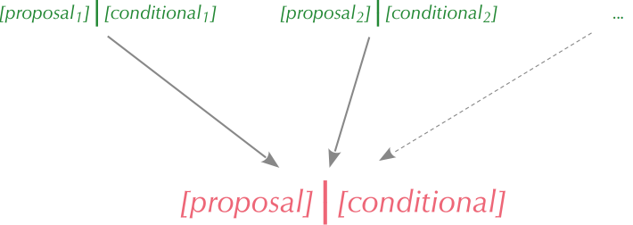

4 What is an inference?
\[ \DeclarePairedDelimiters{\set}{\{}{\}} \DeclareMathOperator*{\argmax}{arg\,max} \]
In the assembly-line decision problem of § 1, the probability of early failure was very important in determining the optimal decision. If the probability had been \(5\%\) instead of \(10\%\), the optimal decision would have been different. Also, if the probability had been \(100\%\) or \(0\%\), it would have meant that we knew for sure what was the successful decision.
In that decision problem the probabilities of the outcomes in view of the test results were already given. In real decision problems, however, the probabilities of the outcomes almost always need to be calculated, and their calculation can be the most time- and resource-demanding stage in solving a decision problem.
We’ll loosely refer to problems of calculating probabilities as “inference problems”, and to their calculation as “drawing an inference”. Drawing inferences is very often a goal or need in itself, without any underlying decision process.
Our goal now is to learn how to draw inferences – that is, how to calculate probabilities. We’ll proceed by facing the following questions, in order:
What do we mean by “inference”, more precisely? What important aspects about inferences should we keep in mind?
What kind of mathematical notation do we use for inferences and probabilities?
What are the rules for drawing inferences, that is, for calculating probabilities?
4.1 The wide scope and characteristics of inferences
Let’s see a couple more informal examples of inference problems. For some of them an underlying decision-making problem is also alluded to:
Looking at the weather we try to assess if it’ll rain today, to decide whether to take an umbrella.
Considering a patient’s symptoms, test results, and medical history, a clinician tries to assess which disease affects a patient, so as to decide on the optimal treatment.
Looking at the present game position
 the X-player, which moves next, wonders whether placing the next X on the mid-right position leads to a win.
the X-player, which moves next, wonders whether placing the next X on the mid-right position leads to a win.From the current set of camera frames, the computer of a self-driving car needs to assess whether a particular patch of colours in the frames is a person, so as to slow down the car and stop.
Given that \(G=6.67 \cdot 10^{-11}\,\mathrm{m^3\,s^{-2}\,kg^{-1}}\), \(M = 5.97 \cdot 10^{24}\,\mathrm{kg}\) (mass of the Earth), and \(r = 6.37 \cdot 10^{6}\,\mathrm{m}\) (radius of the Earth), a rocket engineer needs to know how much is \(\sqrt{2\,G\,M/r\,}\).
We’d like to know whether the rolled die is going to show .
An aircraft’s autopilot system needs to assess how much the aircraft’s roll will change if the right wing’s angle of attack is increased by \(0.1\,\mathrm{rad}\).
By looking at the dimensions, shape, texture of a newly dug-out fossil bone, an archaeologist wonders whether it belonged to a Tyrannosaurus rex.
A voltage test on a newly produced electronic component yields a reading of \(100\,\mathrm{mV}\). The electronic component turns out to be defective. An engineer wants to assess whether the voltage-test reading could have been \(100\,\mathrm{mV}\), if the component had not been defective.
Same as above, but the engineer wants to assess whether the voltage-test reading could have been \(80\,\mathrm{mV}\), if the component had not been defective.
- From measurements of the Sun’s energy output and of concentrations of various substances in the Earth’s atmosphere over the past 500 000 years, and of the emission rates of various substances in the years 1900–2022, climatologists and geophysicists try to assess the rate of mean-temperature increase in the years 2023–2100.
From the examples and from your answers to the exercise we observe some very important characteristics of inferences:
Some inferences can be made exactly, that is, without uncertainty: it is possible to say whether the object of the inference is true or false. Other inferences, instead, involve an uncertainty.
All inferences are based on some data and information, which may be explicitly expressed or only implicitly understood.
An inference can be about something past, but based on present or future data and information: inferences can show all sorts of temporal relations.
An inference can be essentially unrepeatable, because it’s about something unrepeatable or based on unrepeatable data and information.
The data and information on which an inference is based can actually be unknown; that is, they can be only momentarily contemplated as real. Such an inference is said to be based on hypothetical reasoning.
The object of an inference can actually be something already known to be false or not real: the inference tries to assess it in the case that some data or information had been different. Such an inference is said to be based on counterfactual reasoning.
4.2 Where are inferences drawn from?
This question is far from trivial. In fact it has connections with the earth-shaking development and theorems in the foundations of mathematics of the 1900s.
The proper answer to this question will take up the next sections. But a central point can be emphasized now:
In order to draw an inference – calculate a probability – we usually go up a chain: we must first draw other inferences, and for drawing those we must draw yet other inferences, and so on.
At some point we must stop at inferences that we take for granted without further proof. These typically concern direct experiences and observations. For instance, you see a tree in front of you, so you can take “there’s a tree here” as a true fact. Yet, notice that the situation is not so clear-cut: how do you know that you aren’t hallucinating, for example, and there’s actually no tree there? That is taken for granted. If you analyse the possibility of hallucination, you realize that you are taking other things for granted, and so on. Probably most philosophical research in the history of humanity has been about grappling with this runaway process – which is also a continuous source of sci-fi films. In logic and mathematical logic, this corresponds to the fact that to prove some theorem, we must always start from some axioms. There are “inferences” – tautologies – that can be drawn without requiring others; but they are all trivial, such as “this component failed early, or it didn’t”. They are of little use in a real problem, although they have a deep theoretical importance.

In concrete applications we start from many inferences upon which everyone, luckily, agrees. But sometimes we must also use starting inferences that are more dubious or not agreed upon by anyone. In this case the final inference has a somewhat contingent character, and we accept it (as well as the solution of any underlying decision problem) as the best available for the moment. This is partly the origin of the term “model”.
4.3 Basic elements of an inference
Let us start to introduce some mathematical notation and more precise terminology for inferences.
Every inference has an “object” – what is to be assessed – as well as data, information, or hypotheses on which it is based. We call proposal the object of the inference, and conditional what the inference is based upon. We separate them with a vertical bar “\(\pmb{\nonscript\:\big\vert\nonscript\:\mathopen{}}\)”, which can be pronounced “given” or “conditional on”:
\[ \textit{[proposal]}\ \pmb{\nonscript\:\Big\vert\nonscript\:\mathopen{}}\ \textit{[conditional]} \]
We have seen that to calculate the probability for an inference, we must start from the probabilities of other inferences. A basic inference process therefore can be schematized like this:

Proposal is Johnson’s (1924) terminology; Keynes (1921) uses “conclusion”; modern textbooks do not seem to use any specialized term. Conditional is modern terminology; other terms used: “evidence”, “premise”, “supposal”. The vertical bar, originally a solidus, was introduced by Keynes (1921).
The next important task ahead of us is to introduce a flexible and enough general mathematical representation for the objects and the bases of an inference. Then we shall finally study the rules for drawing correct inferences.